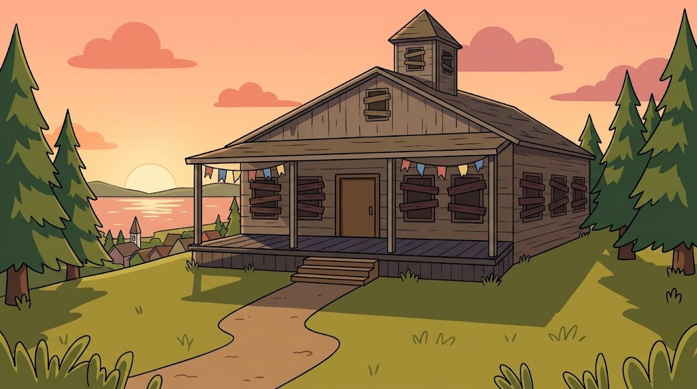
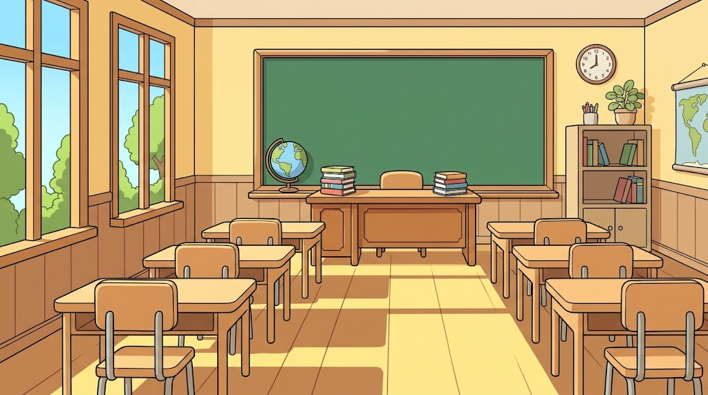
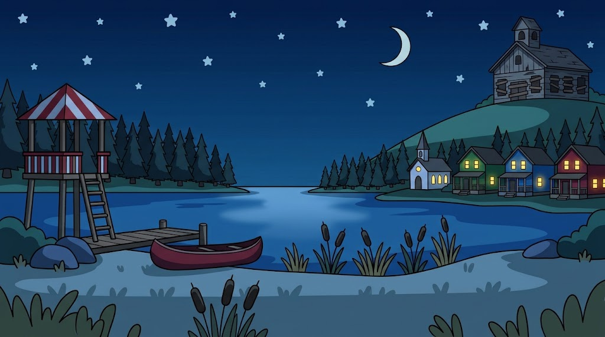
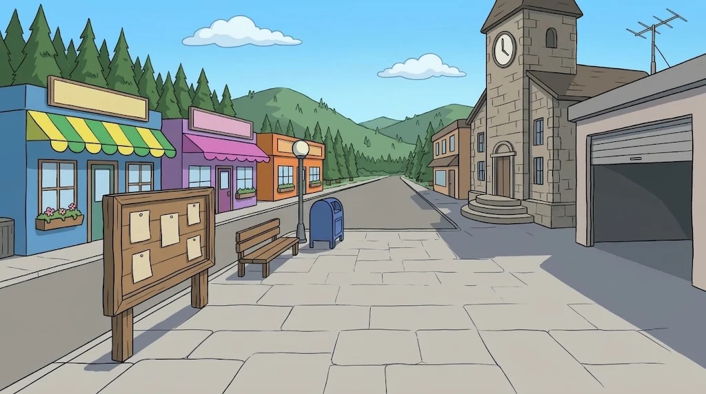
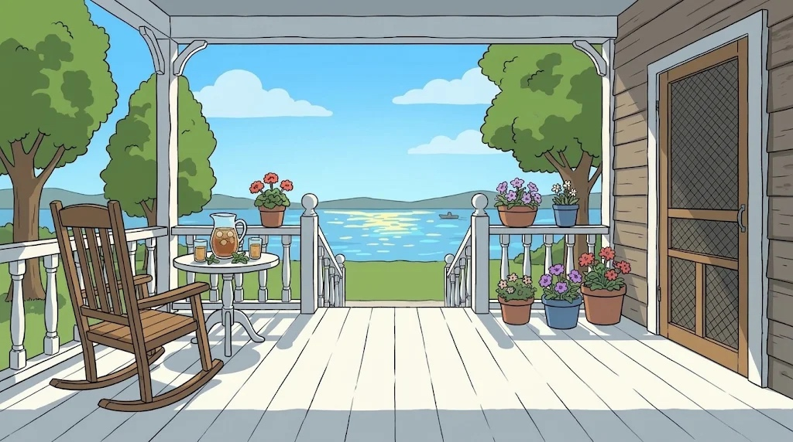
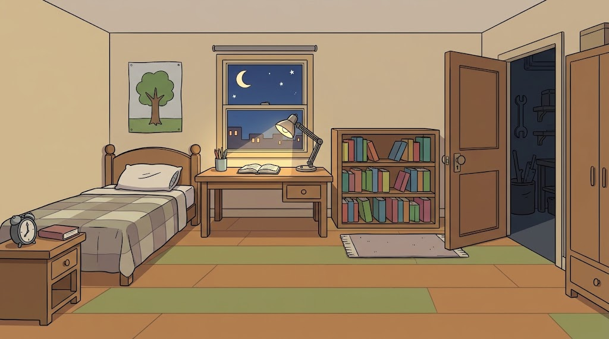
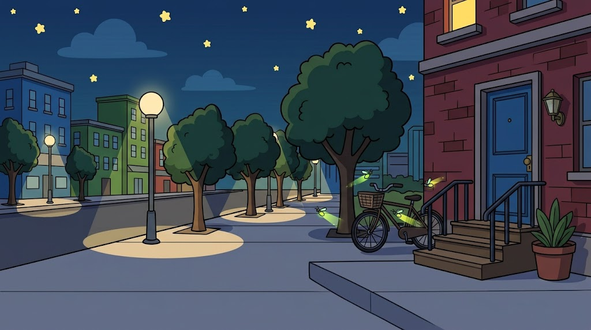
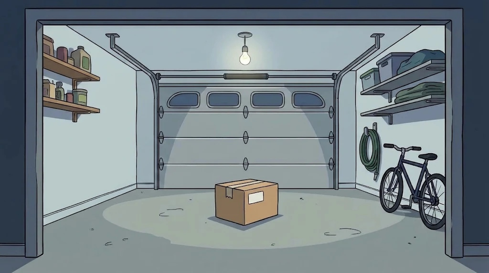

Watch the revised episodeReference pictures and revised sets
The existing pictures guide the geometry, layout, colors and lighting. The episode uses modeled Three.js sets that can be viewed from other angles.
Old hall

Reference picture Revised episode · full 3D
Revised episode · full 3DClassroom

Reference picture Revised episode · full 3D
Revised episode · full 3DLake at night

Reference picture Revised episode · full 3D
Revised episode · full 3DStoop at sunset
 Reference picture
Reference picture Revised episode · full 3D
Revised episode · full 3DMain Street

Reference picture Revised episode · full 3D
Revised episode · full 3DBrook’s porch

Reference picture Revised episode · full 3D
Revised episode · full 3DPip’s bedroom

Reference picture Revised episode · full 3D
Revised episode · full 3DStoop at night

Reference picture Revised episode · full 3D
Revised episode · full 3DPip’s garage

Reference picture Revised episode · full 3D
Revised episode · full 3D